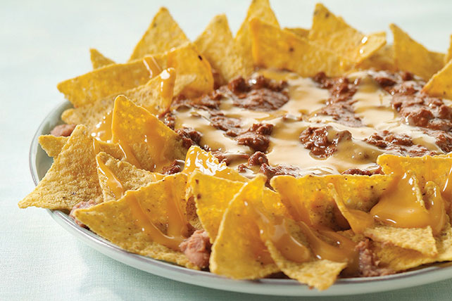

Tomatsuppe m/ pølse
1 Pose tomatsuppe.
2 Stk egg.
1 Pakke pølser.
100g Makaroni.
Salt og Pepper.
1.Kok eggene hardkokte ca. 10 minutter, kutt opp pølser
2.Kok opp suppen med vann. Tilsett makaroni og pølsekuler og la småkoke i 7 minutter
3.Skrell eggene, del i to og server et halvt egg i hver suppetallerken. Server gjerne med salt og pepper
